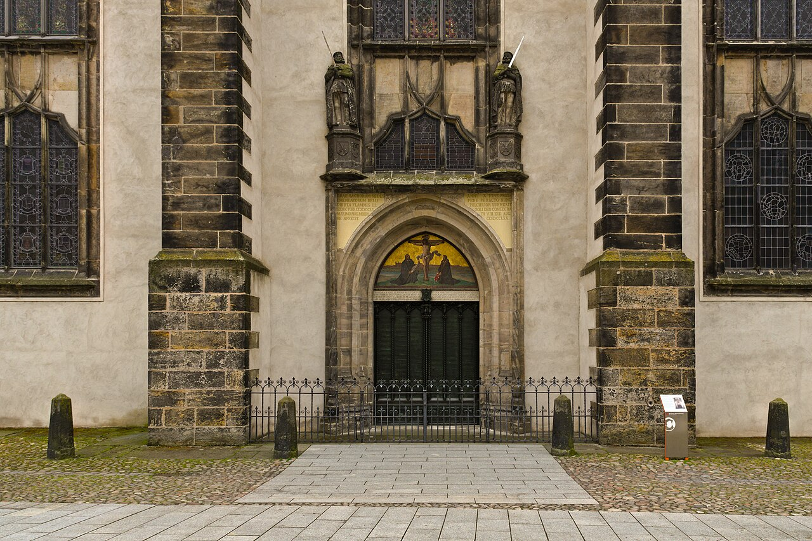
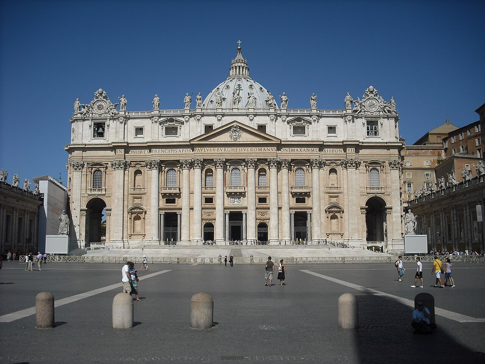
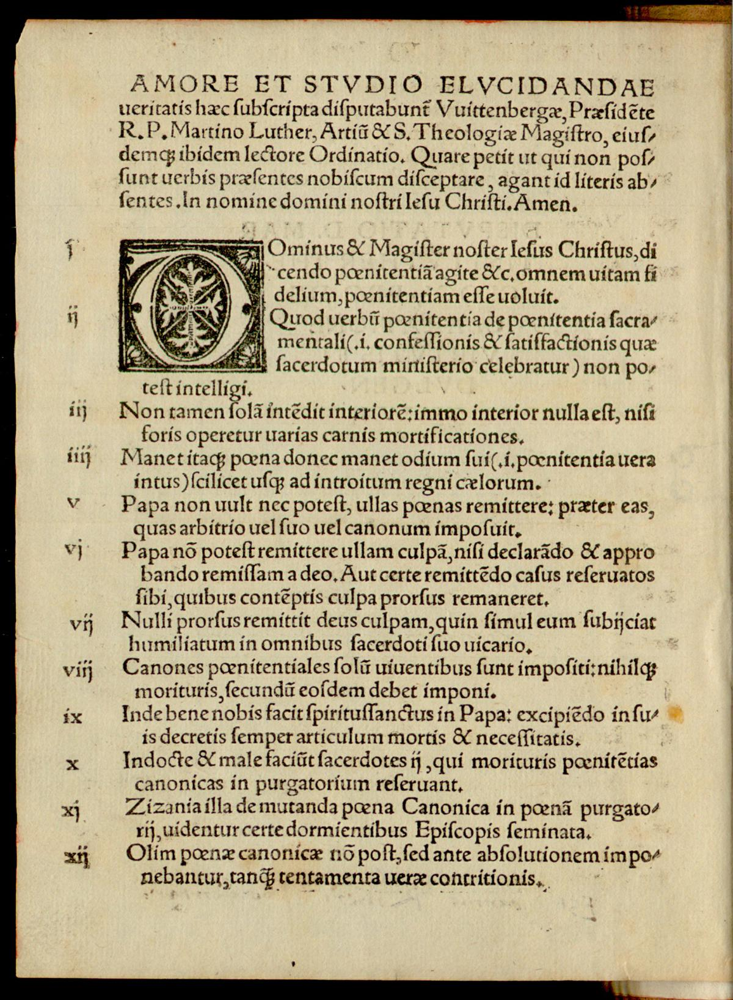
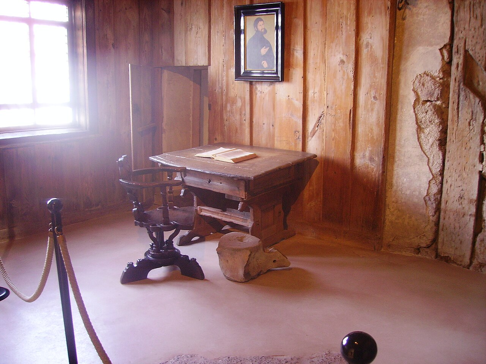
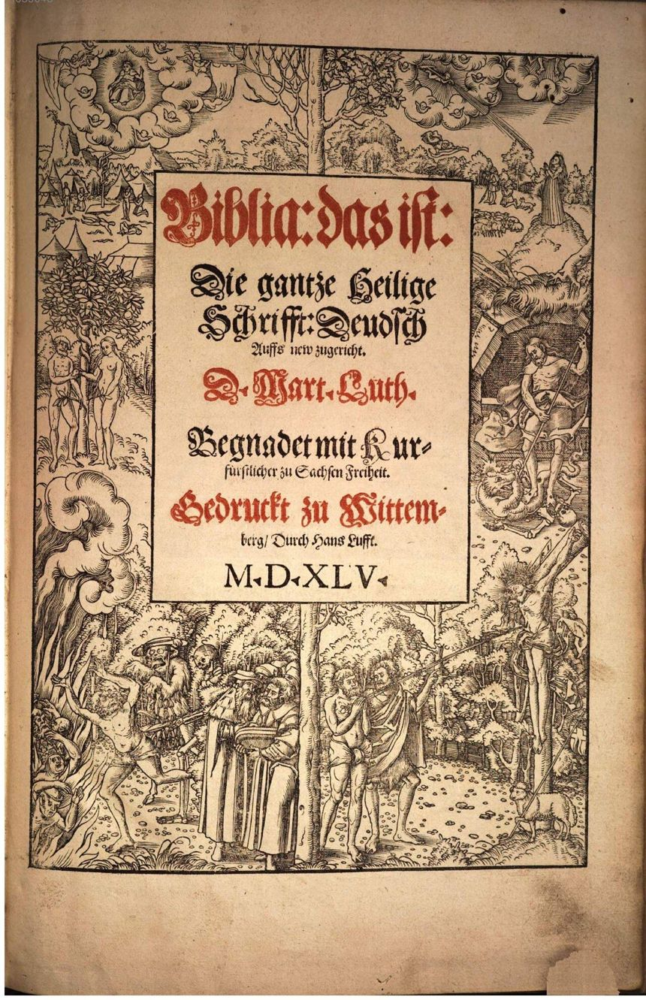
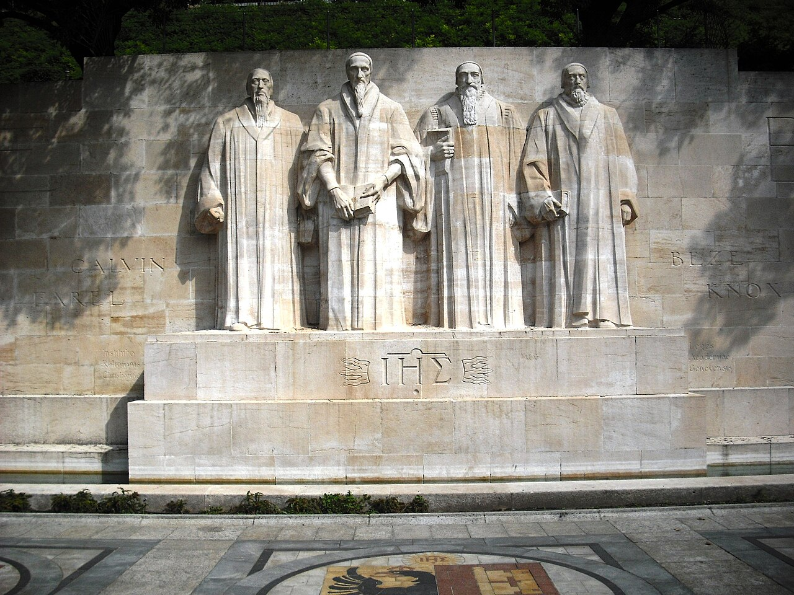
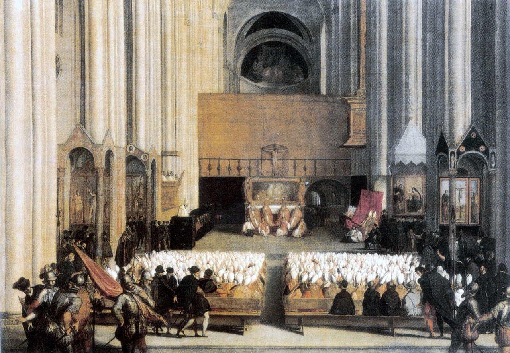
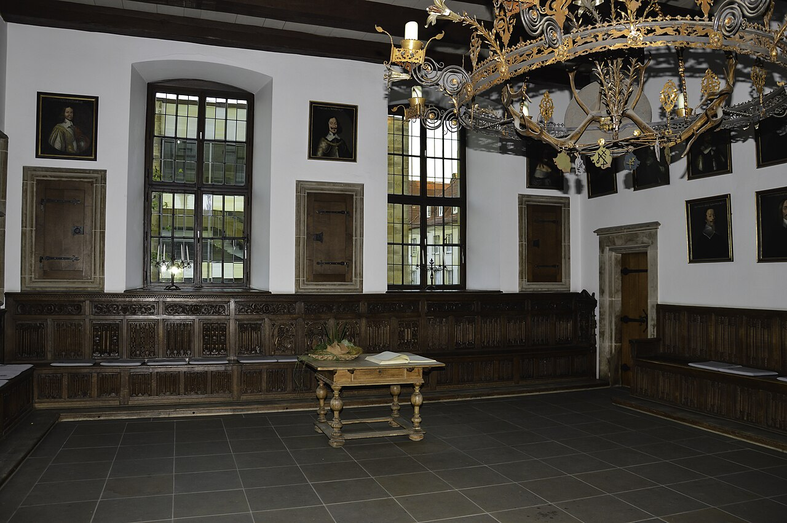

歴史・地理 History & Geographyキリスト教は、 なぜ 2つに 割れた？ 1521年、教会から破門された大学教授が、皇帝の前で自分の本を取り消すことを断りました。444年前、破門された王が教皇に頭を下げたのとは、逆の結末です。贖宥状と印刷機と諸侯の盾を、地図と分かれ方の図でたどりながら、西ヨーロッパの教会が割れたわけを探ってみませんか。
2026.11.11 UP 約8分で読める 文：SOMOSOMO編集部
写真：ヴィッテンベルクの城教会の入り口（95か条を貼り出したと伝わる扉）／Romzig（2026年、CC0）
Previously
前回は、地球を小さく見積もり、西へ行けばアジアは近いと信じたコロンブスが、1492年に大西洋を渡った話でした。カリブ海の島々に着いた彼は、最後までそこがアジアではないとはっきり認めなかったとされます。その航海から、じゃがいもやトウガラシが世界へ、病気がアメリカ大陸へ渡りました。
ライン川のほとりの町ヴォルムス、1521年4月18日。皇帝カール5世の前に、ヴィッテンベルク大学の教授マルティン・ルターが立ちました。机には、彼の書いた本が並んでいます。前の日、これはお前の本か、中身を取り消すか、と問われ、答えを1日待ってもらっていました。
ルターは、取り消しませんでした。聖書の言葉か、はっきりした理屈で誤りを示されないかぎり、何ひとつ取り消すことはできない、と答えました。このときルターは、すでに教皇から破門されていました。
第15話で見たように、1077年には、破門された王のほうが雪の城門の前で教皇に許しを請いました。それから444年。破門された1人の教授は、頭を下げずに帰っていきます。そして、ローマの教皇のもとで1つだった西ヨーロッパの教会は、2つに割れていきました。キリスト教の教会は、なぜ割れたのでしょうか 。
In a word
印刷で広まったルターの訴え を、諸侯や王が自分の国の教え に選んだから。
01
The Price of Pardon
贖宥状の 売り上げは、 大聖堂と 借金の返済に 回った
話は、ローマの大工事から始まります。1506年、教皇ユリウス2世は、古くなったサン・ピエトロ大聖堂を取りこわし、新しい大聖堂を建て始めました。取りこわされた古い聖堂は、第15話でカール大帝が冠を受けた教会です。
そのお金を集める手立てのひとつが、贖宥状（しょくゆうじょう）でした。当時の教会の教えでは、罪は告白して許されても、その罰は残ります。罰をこの世で償いきれなければ、死後に煉獄（れんごく。天国に入る前に罰を受けて清められるとされた場所）で償うとされていました。
贖宥状は、教皇の名のもとで贖宥（罪の罰を軽くすること）を与えるとされた証書です。死んだ家族の分を買うこともできました。もとは祈りや善い行いと結びついたものでしたが、お金を納めることと結びつけて売られるようになっていきます。

サン・ピエトロ大聖堂 ローマのサン・ピエトロ広場から見た、大聖堂の正面です。1506年に建て直しが始まり、完成して献堂されたのは1626年でした。その工事のお金を集めるために、贖宥状が売られました。写真：Façade of St. Peter's Basilica 1 ／Jolly Janner（2009年、パブリックドメイン）
1515年、教皇レオ10世は、大聖堂のための新しい贖宥状を出しました。ドイツでの売り出しを任されたのは、マインツの大司教アルブレヒトです。いくつもの教会の位を兼ねる許しを得るため、教皇庁に納める大金を借りていました。売り上げの半分は、その借金の返済に回される約束だったとされます。
アルブレヒトのもとで各地を回ったのが、説教師のテッツェルです。箱の中でお金が鳴れば、魂が煉獄から飛び出す。そんな文句が、彼のものとして伝えられています。ヴィッテンベルクのあるザクセンでは売られていなかったため、町の人々は近くの町まで買いに出かけました。
ヴィッテンベルクの修道士で神学の教授だったルターは、戻ってきた人々が、もう悔い改めなくてもよいと言うのを聞いて心配になります。1517年10月31日、ルターはアルブレヒトに手紙を書き、贖宥状についての95か条の論題（大学で議論するための問い）を添えました。
ルターは、お金を払えば魂がすぐ救われるという説き方を、人の作った教えだと批判しました。ただし、教皇に逆らうつもりはなく、教皇も自分と同じ考えのはずだ、という立場でした。95か条は、教会を割るためではなく、教会の中の議論として書かれていました。
02
Printed Words
大学の議論が、 印刷機で 町の話題に 変わった
95か条はラテン語（教会と大学の言葉）で書かれていました。それでも写しはすぐに出回り、スイスのバーゼルでは4ページの小冊子に、ライプツィヒやニュルンベルクでは1枚の貼り紙に刷られます。この年のうちに、ドイツで数百部が刷られました。
第19話で見た、グーテンベルクの印刷機が生まれて70年ほど。ドイツの町々には、すでに印刷所がありました。ルターの伝記によれば、95か条の写しは2週間でドイツじゅうに広まったといいます。

刷られた95か条 1517年にバーゼルで刷られた、95か条の小冊子の最初のページです。左はしに番号をふった短い文が並びます。大学の議論のための文が、こうして本の形で町から町へ渡りました。写真：Ninety-five Theses (Basel) ／マルティン・ルター（1517年、パブリックドメイン）
ルターは、ここから先をドイツ語でも書き始めます。短くて、学のない人にも読める小冊子です。最初の大きな成功作は、20回も刷り直されました。1518年から1520年までの3年間に、ドイツの印刷所が刷ったルターの著作は、30万部にのぼったとされます。
論争が進むにつれ、ルターの主張もはっきりしていきました。人が救われるのは、善い行いや贖宥状によるのではなく、神を信じる心によってだけだ（信仰のみ）。教えのよりどころは、教皇の言葉ではなく聖書だ（聖書のみ）。1519年の討論では、教皇も公会議（教会の会議）もまちがうことがある、とまで言いました。
ローマの教会（カトリック）の側から見れば、これは教会の土台を崩す主張でした。カトリックの教えでは、救いには信仰とともに善い行いも関わり、聖書は教会の伝統とともに読むものだったからです。1520年6月、教皇は60日以内に取り消さなければ破門する、と警告しました。
ルターはその年の12月10日、ヴィッテンベルクの町の門の前で、教皇の警告の文書を火に投げ入れます。1521年1月3日、ルターは破門されました。こうして、冒頭のヴォルムスの場面につながります。
03
The Prince's Shield
皇帝の命令より、 諸侯の選択が 勝った
ルターがヴォルムスへ行けたのは、領主のザクセン選帝侯フリードリヒが、行き帰りの安全を皇帝に約束させたからです。選帝侯とは、皇帝を選ぶ7人の諸侯（各地を治める有力な貴族）のことです。フリードリヒは、ヴィッテンベルク大学を開いた人でもありました。
ヴォルムスの議会のあと、5月25日に皇帝は、ルターを異端（教会の正しい教えにそむく者）とし、その本を禁じました。帝国の法の外に置かれ、だれに殺されても罪に問われない身になります。
そのころルターは、もういませんでした。帰り道の5月4日、森の中で覆面の騎馬の男たちに襲われ、連れ去られていました。追いはぎのふりをしたのは、フリードリヒの家来でした。ルターはヴァルトブルク城にかくまわれ、「騎士ゲオルク」という名で、翌年3月まで暮らします。

ヴァルトブルク城のルターの部屋 ドイツ中部のアイゼナハの山の上に立つ城の、ルターが暮らしたとされる部屋です。この部屋で、ルターは新約聖書を11週間ほどで訳したとされます。写真：Eisenach Wartburg Innen Lutherstube 1 ／Zairon（2007年、CC0）
城の10か月のあいだに、ルターは新約聖書（イエスと弟子たちの話をまとめた部分）を、ギリシャ語などからドイツ語に訳しました。わずか11週間ほどで仕上げた訳は1522年9月に刷られ、ルターが死ぬ1546年までに約20万部が出回ります。ラテン語の読めない人も、聖書を自分で読めるようになりました。

ルター訳の聖書 1545年にヴィッテンベルクで刷られた、ルター訳の聖書の扉です。題は「聖書、すなわち全き聖なる書、ドイツ語」の意味で、下の M.D.XLV は1545年を表します。写真：Biblia 1545 ／マルティン・ルター訳、ハンス・ルフト刷（1545年、パブリックドメイン）
皇帝の命令は、ドイツではほとんど守られませんでした。カール5世は、第21話の女王イサベルの孫で、スペイン王と神聖ローマ帝国（いまのドイツを中心に、たくさんの諸侯や町が集まった国）の皇帝を兼ねていました。
広い領地を持つ皇帝は、フランスとの戦争に追われ、東からはオスマン帝国が迫っていました。そのあいだに、ルターの教えをとる諸侯や町が増えていきます。
1529年、シュパイアーの帝国議会の決定に抗議した6人の諸侯と14の町が、初めて「プロテスタント（抗議する者）」と呼ばれました。この教会を改める動きを、宗教改革と呼びます。
改革を選ぶと、もうひとつ変わることがありました。第15話で見たように、教会には10分の1税や寄進された土地が集まっていました。改革を選んだ多くの町で修道院が閉じられ、その財産は町の手に移ります。諸侯にとって改革は、信仰の問題であると同時に、ローマから離れて自分の国を治める道でもあった、とみられます。
ただし、改革の旗はだれにでも味方したわけではありません。1524〜25年、南ドイツなどで農民たちが領主に立ち上がると（ドイツ農民戦争）、ルターは領主の側について、乱をしずめるよう求めました。この戦争では、最大で10万人の農民が殺されたとされます。
カトリックとルター派の諸侯は戦いもしましたが、1555年、アウクスブルクの和議で折り合います。それぞれの諸侯が、自分の国をカトリックにするかルター派にするかを選んでよい。従えない住民には、よそへ移る道が残されました。西の教会の割れ目は、こうして法の上で認められたのです 。
Fig.01 宗教改革の おもな舞台 （1517〜1648年）
地中海
神聖ローマ帝国
大西洋
フランス
ヴィッテンベルク
ヴァルトブルク城
ジュネーヴ
バーゼル
ロンドン
ローマ
トリエント
ヴォルムス
アウクスブルク
プラハ
ミュンスター
オスナブリュック
改革が始まった・広がった場所
カトリック側の中心と公会議
議会・和議・戦争の始まりの場所
見どころは、改革の始まった場所と、それを決着させた会議の場所が、どちらも神聖ローマ帝国（いまのドイツのあたり）に集まっていること。ローマとトリエントは、アルプスの南にあります。地図は Natural Earth（パブリックドメイン）から作りました。町の位置はおおよそです。
04
Many Reformations
割れた先も 1つではなく、 ローマの教会も 変わった
改革の流れは、ルター派だけでは終わりませんでした。フランス生まれの神学者カルヴァンは、1541年からスイスのジュネーヴの教会を率い、だれが救われるかは神があらかじめ決めている、と説きました（予定説）。ジュネーヴは改革派（カルヴァン派）の中心になり、その教えはフランスやスコットランドへ広がります。

ジュネーヴの宗教改革記念碑 カルヴァンの生誕400年を記念して、1909年にジュネーヴにできた記念碑です。左から2人目がカルヴァン。4人とも、この町と縁の深い改革者です。写真：ReformationWallGeneva ／Ruth Nguyen（撮影年不明、パブリックドメイン）
イングランドでは、王ヘンリー8世が妃キャサリンとの結婚の取り消しを求めましたが、教皇は認めませんでした。妃は皇帝カール5世のおばだったからです。王は教皇と手を切り、1534年、自分がイングランドの教会の長だと議会に定めさせました（イングランド国教会）。
Fig.02 キリスト教の 教会の 分かれ方
キリスト教の教会
1054年
東方正教会
東ローマの教会
西の教会
ローマ教皇のもと
1517年〜 宗教改革
カトリック
ローマ教皇のもと
プロテスタント
ルター派
1517年〜・ドイツ
改革派
1530年代〜・スイス
イングランド国教会
1534年〜・王が首長
西の教会のうち、
ローマに残った側
見どころは、東の教会は1054年にすでに分かれていて、16世紀に割れたのは西の教会だということ。しかも割れた先のプロテスタントは、ひとつにまとまっていません。図は本文の内容をまとめたもので、すべての宗派ではありません。
ローマの教会も、手をこまねいていたわけではありません。1545年から1563年まで、北イタリアのトリエント（いまのトレント）で公会議が開かれ、カトリックの教えを定め直し、プロテスタントの主張とはっきり線を引きました。
そのいっぽうで、公会議は、贖宥そのものは保ちつつ、お金でもうけることを禁じ、聖職者の教育を改めるよう定めました。1567年には教皇ピウス5世が、お金のやりとりをともなう贖宥を取り消しています。贖宥の乱用は、ローマの側でも改められていきました。

トリエント公会議 1563年7月15日の、公会議の23回目の会合を描いた絵です。トリエントの大聖堂の中で、白い衣の司教たちが向かい合って並んでいます。写真：Tridentinum ／作者不明（かつてはティツィアーノの作とされた）（1550〜1600年ごろ、パブリックドメイン）
1540年に教皇に認められたイエズス会の宣教師は海をこえ、1549年にはザビエルが日本の鹿児島に着きます。
05
Thirty Years
30年の戦争の 果てに、 割れたまま 並ぶことにした
アウクスブルクの和議には、穴がありました。選べるのはカトリックかルター派だけで、カルヴァンの改革派は入っていません。そのうえ帝国には、300ほどの諸侯や町が並んでいて、その線引きをめぐる争いが続きました。
1618年、ボヘミア（いまのチェコ）の都プラハで、プロテスタントの貴族たちが、カトリックの王の側の役人を城の窓から投げ落とします（3人とも助かりました）。ここから始まった三十年戦争は、デンマークやスウェーデン、スペインを巻きこんでいきました。
戦争の中身も変わっていきます。1635年からは、カトリックの国フランスが、プロテスタントのスウェーデンと組んで皇帝と戦いました。信仰の争いは、領土と力の争いに変わっていきました。戦争と飢えと病で、450万〜800万人が亡くなったと推計されています。

オスナブリュックの「平和の間」 ドイツ北西部のオスナブリュックの市庁舎の広間です。1643年から1648年まで、ここで和平の話し合いが続きました。壁には、そのときの各国の使節42人の肖像画がかかっています。写真：Osnabrück Friedenssaal ／Jan-Kristof.B（2013年、CC0）
1648年10月、オスナブリュックと近くのミュンスターで、和平の条約が結ばれました（ウェストファリア条約）。カルヴァンの改革派も、ようやく認められました。国の主が、住む人に自分の信仰を押しつけることも、制限されたとされます。
教皇インノケンティウス10世は、この条約を無効だと強く抗議しました。けれども、その声で条約が変わることはありませんでした。かつて王を雪の門の前に立たせた教皇の言葉は、もう国どうしの取り決めを動かせなくなっていました。
Fig.03 西の教会が 割れていった 130年
1520
1560
1600
1640
1517 ルターが95か条を書く1521 ヴォルムスの帝国議会1524〜25 ドイツ農民戦争1534 イングランドが教皇から離れる1540 イエズス会ができる1545〜63 トリエント公会議1555 アウクスブルクの和議
1618〜48 三十年戦争1648 ウェストファリア条約
見どころは、2つの和議（赤い点）のあいだに、およそ100年がはさまっていること。1555年には諸侯が選ぶ形で割れ目を認め、1648年には改革派も加えて、割れたまま並ぶ形が決まりました。黒い帯は続いた期間で、点の位置は年数に比例します。
こうしてみると、教会が割れたわけは、1人の教授の勇気だけでは説明できません。贖宥状への問いを、印刷機がドイツじゅうに運びました。破門と皇帝の命令から、諸侯がルターを守りました。
そして諸侯や王は、ローマから離れることに、自分の国を治める利点も見ていた、とみられます。信仰の訴えと、国を治める者の思わくが重なったとき、西の教会は割れたのです 。
06
By the Numbers
数字で見る 宗教改革
約 5分の 116世紀のはじめの約30年間にドイツで刷られた本や冊子のうち、ルターの書いたものの割合Reformation（Wikipedia）による
300ほど 三十年戦争のころ、神聖ローマ帝国に並んでいた諸侯や町などの数。それぞれが信仰の線引きに関わったThirty Years' War（Wikipedia）による
109 ウェストファリアの和平の話し合いに集まった使節団の数。信仰の争いは、ヨーロッパじゅうの国の問題になっていたPeace of Westphalia（Wikipedia）による
Here's the Fun Part
ここが面白い！ルターを守った 殿様は、 聖遺物の 大収集家だった
ルターをかくまったフリードリヒは、生涯カトリックのままだったとみられています。それどころか、ヴィッテンベルクの城教会に、聖人の骨や持ち物とされる品（聖遺物）を集めていました。1518年の目録には1万7,443点、2年後には1万9,000点をこえています。
当時は、聖遺物を拝むと贖宥が得られるとされていました。ある計算では、全部をきちんと拝めば、190万年あまり分の罰が軽くなったともいわれます。そして城教会がその聖遺物をいちばん多く見せたのが、11月1日の諸聖人の日でした。ルターが手紙を書いた10月31日は、その前の晩です。
テッツェルの贖宥状がザクセンで売られなかったのも、フリードリヒが禁じたからだとされます。新しい贖宥状が出ると、それまでの贖宥はしばらく止められます。それでは、聖遺物に集めてきた自分の収入が減ってしまう、というわけです。贖宥を問うたルターを守ったのは、贖宥の収入を得ていた殿様でした 。
ドイツでは、いまもこの日を宗教改革の記念日として祝う地方があります。ハロウィーンという名も、もとは諸聖人の日の前の晩（All Hallows' Eve）という意味です。
次の10月31日、ハロウィーンでにぎわう町を歩いたら、その夜が、聖遺物を見せる祭りの前の晩で、ルターが手紙を書いた日でもあることを思い出してみてください。
To be continued
シュパイアーで「プロテスタント」が生まれたのと同じ1529年、オスマン帝国のスレイマン1世が、10万をこえる兵でウィーンを囲みました。インドでは1526年にムガル帝国が起こり、中国は明が治めていました。ヨーロッパが信仰をめぐって割れていたころ、世界でいちばん豊かだったのは、どこだったのでしょうか。
出典・参考
Diet of Worms （Wikipedia 英語版）：1521年4月16〜18日の審問、17日に本が自分のものか、中身を取り消すかを問われ翌日まで時間をもらったこと、聖書とはっきりした理屈で示されないかぎり取り消さないという答え、5月25日のヴォルムス勅令と帝国からの追放、フリードリヒが安全な通行を約束させたこと、ヴァルトブルク城でのかくまい（1521年5月〜1522年3月）、勅令がドイツでは守られなかったことMartin Luther （Wikipedia 英語版）：ライン川の町ヴォルムス、写しが2週間でドイツじゅうに広まったこと、1519年のライプツィヒ討論で教皇も公会議もまちがうことがあると述べたこと、1520年6月15日の警告（60日以内）、12月10日に文書を焼いたこと、1521年1月3日の破門、5月4日にアイゼナハの南で覆面の騎馬の男たちに連れ去られたこと、アルブレヒトの借金と売り上げの半分、信仰のみによる義認、農民戦争でのルターの立場Ninety-five Theses （Wikipedia 英語版）：贖宥と煉獄の説明、1515年のレオ10世の贖宥、ザクセンで売られず人々が近くの町へ買いに行ったこと、人々が悔い改めなくてよいと言ったことへのルターの心配、1517年10月31日のアルブレヒトへの手紙、教皇と同じ考えのはずという立場、バーゼルの4ページの小冊子とライプツィヒ・ニュルンベルクの貼り紙、その年に数百部、ドイツ語の小冊子が20回刷り直されたこと、諸聖人の日が聖遺物をいちばん見せる日だったこと、扉に貼ったという話の確かさ、1668年からの宗教改革記念日Johann Tetzel ・Indulgence （Wikipedia 英語版）：売り上げの半分がアルブレヒトの借金の返済に回ったこと、お金が箱で鳴ると魂が煉獄から飛び出すという文句、トリエント公会議の贖宥の定め（1562・63年）と1567年のピウス5世St. Peter's Basilica （Wikipedia 英語版）：1506年4月18日の着工、1626年11月18日の献堂、贖宥によるお金集めReformation （Wikipedia 英語版）：大聖堂のための1515年の贖宥とフッガー家の助言でのアルブレヒトの起用、フリードリヒが売り出しを禁じたわけ（それまでの贖宥が止まり、聖遺物への収入が減るため）、16世紀の最初の3分の1の時期にドイツで刷られた本の約5分の1がルターのものだったこと、1529年のシュパイアーで抗議した6人の諸侯と14の町、修道院の解散と財産の移転、聖書のみPrinting press （Wikipedia 英語版）：1518〜1520年にルターの著作が30万部刷られたことFrederick III, Elector of Saxony （Wikipedia 英語版）：1502年のヴィッテンベルク大学の創設、生涯カトリックだったとみられること、ルターを守ったこと、1518年の目録の聖遺物1万7,443点と2年後の1万9,000点超、190万2,202年分の罰が軽くなるという計算Luther Bible ・Wartburg （Wikipedia 英語版）：城での10か月（1521年5月4日〜1522年3月3日）、「騎士ゲオルク」の名、新約の最初の訳が11週間でできたこと（Wartburg の記事は10週間）、1522年9月の新約、ルターが死ぬまでに約20万部Charles V, Holy Roman Emperor ・Catherine of Aragon （Wikipedia 英語版）：イサベルの孫、スペイン王と皇帝を兼ねたこと、フランスやオスマン帝国との戦い、キャサリンがカール5世のおばだったことGerman Peasants' War （Wikipedia 英語版）：1524〜25年、最大で10万人の農民が殺されたこと、ルターが領主の側についたことPeace of Augsburg （Wikipedia 英語版）：1555年9月25日、諸侯がカトリックかルター派かを選べること、従えない人がよそへ移れたこと、改革派が入っていなかったことJohn Calvin ・Reformation Wall （Wikipedia 英語版）：1541年からジュネーヴの教会を率いたこと、予定説、記念碑が1909年に生誕400年を記念してできたことEnglish Reformation （Wikipedia 英語版）：結婚の取り消しを教皇が認めなかったこと、1534年の国王至上法Council of Trent （Wikipedia 英語版）：1545年12月13日〜1563年12月4日、カトリックの教えを定め直したこと、贖宥を保ちつつお金でもうけることを禁じたこと、聖職者の教育などの改革Society of Jesus ・Francis Xavier （Wikipedia 英語版）：1540年9月27日に教皇パウルス3世が認めたこと、宣教師の派遣、ザビエルが1541年にポルトガルを発ち1542年にゴアへ着いたこと、1549年8月15日に鹿児島に上陸したことThirty Years' War （Wikipedia 英語版）：1618年のプラハの窓からの投げ落とし（3人とも助かった）、デンマーク・スウェーデン・スペインの参戦、1635年からのフランスとスウェーデンの同盟、帝国の約300の諸侯や町など、450万〜800万人の死者の推計Peace of Westphalia （Wikipedia 英語版）・Rathaus Osnabrück （Wikipedia ドイツ語版）：1648年10月のオスナブリュックとミュンスターの条約、109の使節団、改革派が認められたこと、住む人に君主の信仰を押しつけられなくなったという見方、教皇インノケンティウス10世の抗議、市庁舎で1643〜48年に話し合いが行われたことと使節42人の肖像画Siege of Vienna (1529) ・Mughal Empire （Wikipedia 英語版）：スレイマン1世が10万をこえる兵でウィーンを囲んだこと、1526年のムガル帝国の始まり（次の話へ）地図（Fig.01）：Natural Earth （パブリックドメイン）の海岸線から作成。町の位置はおおよそ
写真：CC0 またはパブリックドメイン。扉はヴィッテンベルクの城教会の入り口（Wittenberg, Schlosskirche (Juni 2026) 1 ／Romzig、2026年、CC0）。本文中の写真のクレジットは、それぞれの写真の下に記しています